What you will end up with
An Azure SQL Database in the Hyperscale service tier configured for a vector-search workload that mirrors what Azure AI Search provides — but inside your existing transactional database.
All 21 screenshots in this guide were captured against a real Hyperscale deployment in a clean lab tenant. They are not mockups. Tenant-specific identifiers (account chip, subscription names, server names, GUIDs) have been masked with placeholders so the workflow stays clear without exposing any tenant.
Prerequisites
- An Azure subscription with permission to create resource groups, logical SQL servers, and Hyperscale databases (typically Contributor or Owner at subscription or resource-group scope).
- A Microsoft Entra user/group to designate as Microsoft Entra admin for the SQL logical server. This guide uses Entra-only authentication — no SQL logins are created.
- Permission to add firewall rules to the SQL server (the wizard does this for you when you toggle Add current client IP).
- A workstation that can reach
*.database.windows.neton TCP 1433 — needed only if you want to connect from outside the portal.
PREVIEW_FEATURES = ON. Standard-series will let you store vectors but not build an index on them.
Region & capacity notes
- Premium-series is available in most major Azure regions but not all. If your target region greys out the PRMS option in the compute picker, pick a nearby paired region or switch the location in the Basics tab.
- Premium-series memory-optimized (PMO) is the preferred SKU for DiskANN when you have hot working sets larger than the default cache, but it is region-gated. The screenshots in this guide were captured in Sweden Central, which currently only offers regular Premium-series — that is still fully sufficient for DiskANN.
- Some subscriptions (e.g. trial or sandbox tenants) have region locks that block East US, West Europe etc. for SQL DB. If you see a deployment failure on the region, switch to one in the same geography you do have quota in.
- Hyperscale provisioning typically takes 15–25 minutes end-to-end (server + database + HA replica + connection policy). The portal banner often lags ARM by several minutes — see the Tip on step 15.
Open the SQL databases blade
Portal home → search for SQL databases
From the Azure portal, click the top search bar (G + /) and type SQL databases. Open the service blade. If you have never created a database before, you'll see the empty state with a primary Create SQL database CTA.
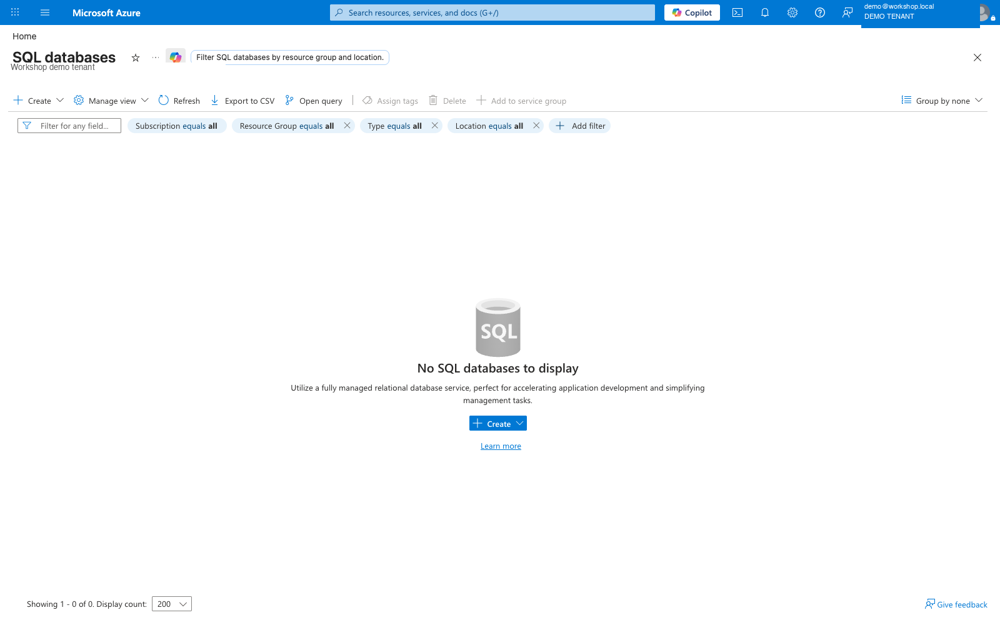
Open the Create dropdown
+ Create → SQL database
Click the + Create button at the top-left. The split menu offers SQL database, elastic pool, managed instance, etc. Pick SQL database.
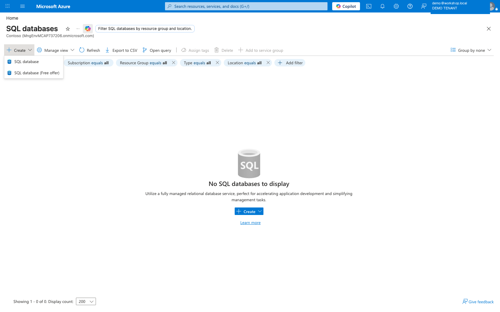
Basics — Project details
Subscription & resource group
You now land on the Create SQL Database wizard. The top section is Project details.
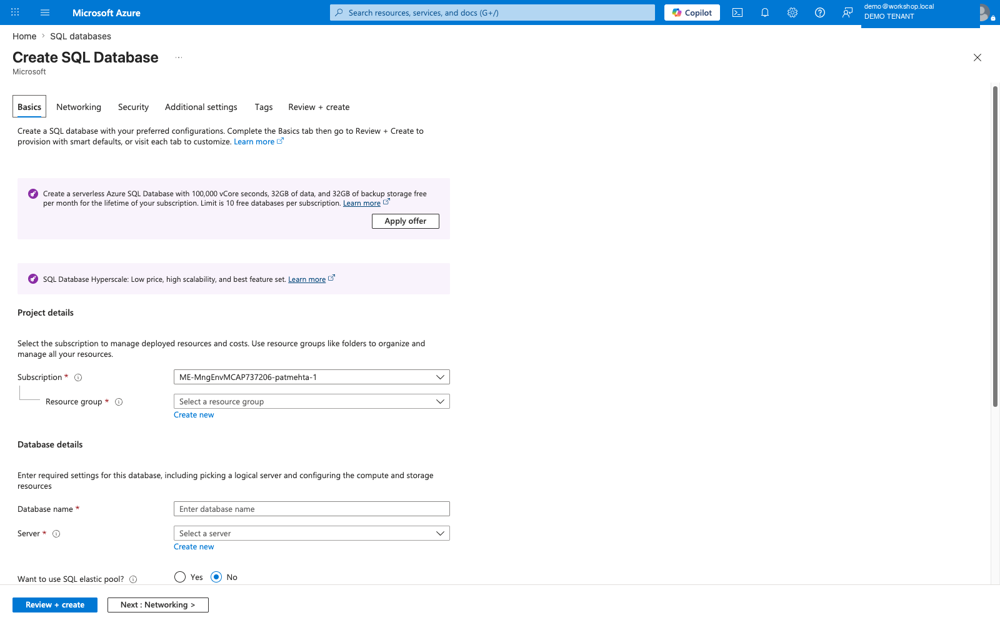
| Field | Value |
|---|---|
| Subscription | Pick the subscription where you want billing to land. |
| Resource group | Pick existing, or click Create new (next step). |
Create the resource group
e.g. rg-hyperscale-prod
If you don't already have a target resource group, click Create new on the Resource group field and give it a descriptive name (we used rg-hyperscale-demo in the screenshots).
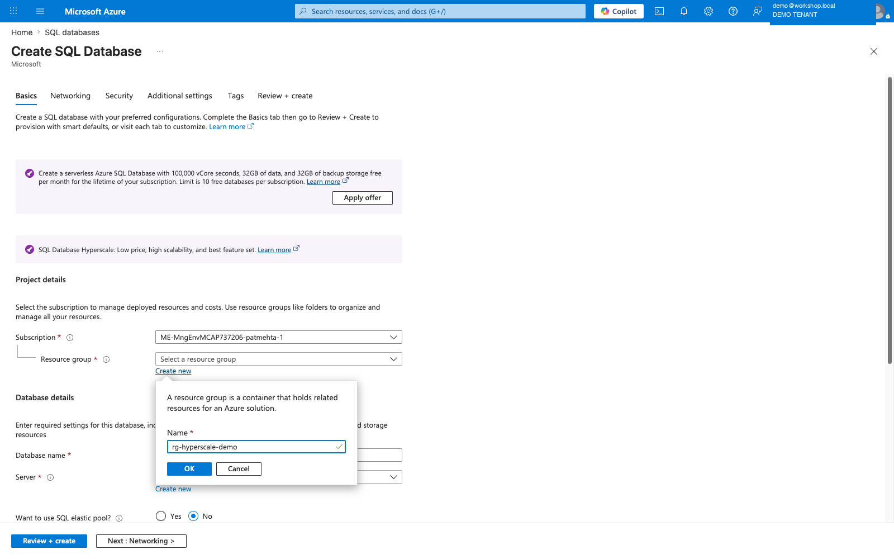
Basics — Database & server details
Name your DB, then create the logical server
Below Project details, fill in the database name. We used searchdb-demo. For Server, you can pick an existing logical server or create one (next step).
| Field | Recommended value |
|---|---|
| Database name | A short, environment-tagged name like searchdb-prod. |
| Server | Click Create new if no suitable logical server exists. |
| Want to use SQL elastic pool? | No — Hyperscale databases cannot be in an elastic pool. |
| Workload environment | Production (this only adjusts the default suggestions). |
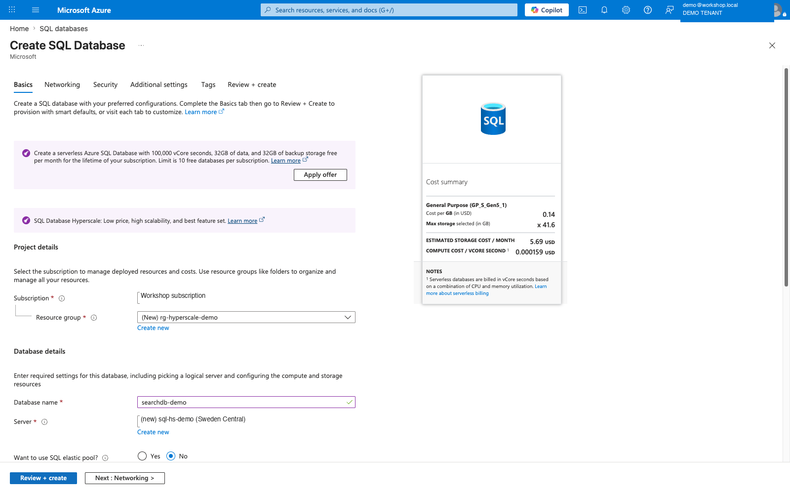
Create the logical SQL server (Entra-only auth)
Region, authentication method, Entra admin
The server panel collects all of the things you'd normally hard-code in an ARM template. Use Microsoft Entra-only authentication in production — it removes the local SQL admin from the threat surface and unblocks managed identity scenarios for apps.
| Field | Recommended value |
|---|---|
| Server name | Globally-unique, lowercase, e.g. sql-hs-prod-<tenant>. |
| Location | Region that supports Premium-series (see notes above). |
| Authentication method | Use only Microsoft Entra authentication. |
| Set Microsoft Entra admin | Pick a group (preferred) or user with privileged access. |
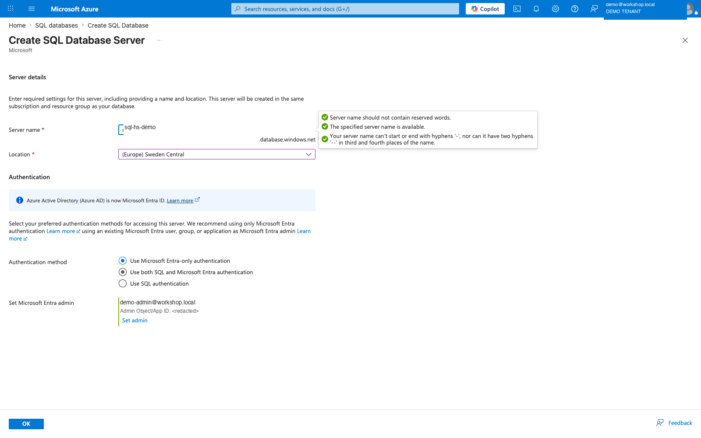
Configure compute + storage
Click Configure database to change SKU
By default the wizard picks General Purpose · Standard-series · 2 vCores. That will not run DiskANN. Click Configure database to open the SKU picker.
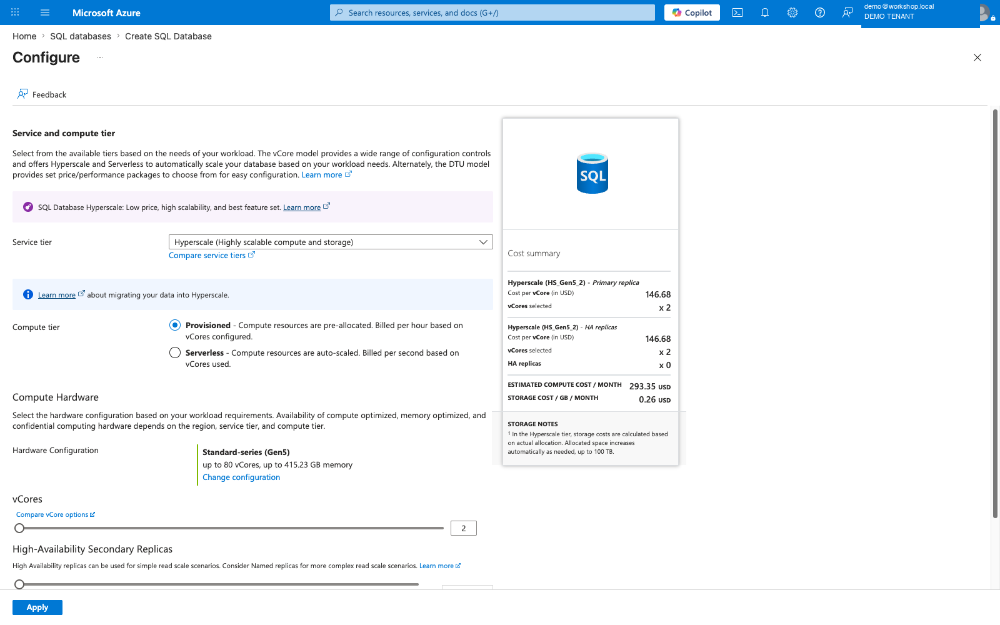
Pick Hyperscale + Premium-series hardware
Service tier = Hyperscale · Hardware = Premium-series
In the compute picker:
- Change Service tier to Hyperscale.
- Click Change configuration under Hardware configuration and choose Premium-series (or Premium-series memory-optimized if your region offers it and your working set is large).
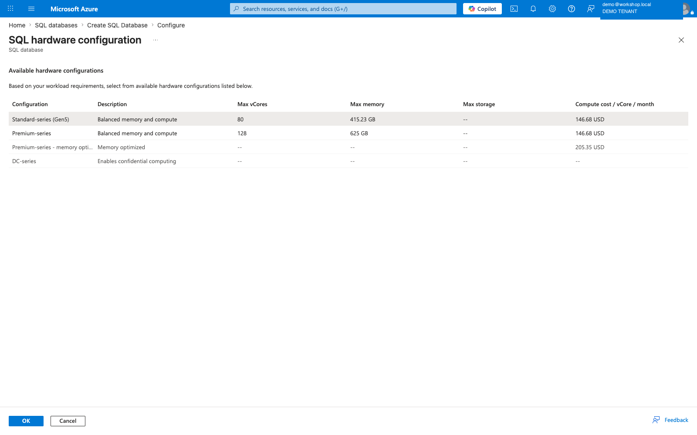
Set high-availability replicas = 1 (minimum)
2 vCores for the demo; production usually starts at 4–8
Once Hyperscale + Premium-series is selected:
- Set vCores to your target (use the slider). 2 vCores is fine for the screenshot demo; pick 4 or 8 for a real workload.
- Set High-availability secondary replicas to 1 (or more). Hyperscale defaults to 0; HA needs at least 1.
- Leave Backup storage redundancy at Geo-redundant backup storage for prod (or LRS/ZRS if data residency rules it out).
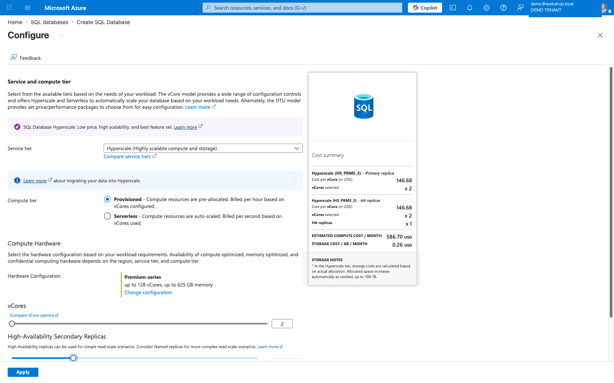
Networking tab — choose connectivity
Public endpoint (demo) · Private endpoint (production)
Click Next: Networking. For a real production deployment you should pick Private endpoint and integrate with your hub VNet. For the demo this guide shows the Public endpoint path because it produces a database you can query from the portal's built-in Query Editor (step 20).
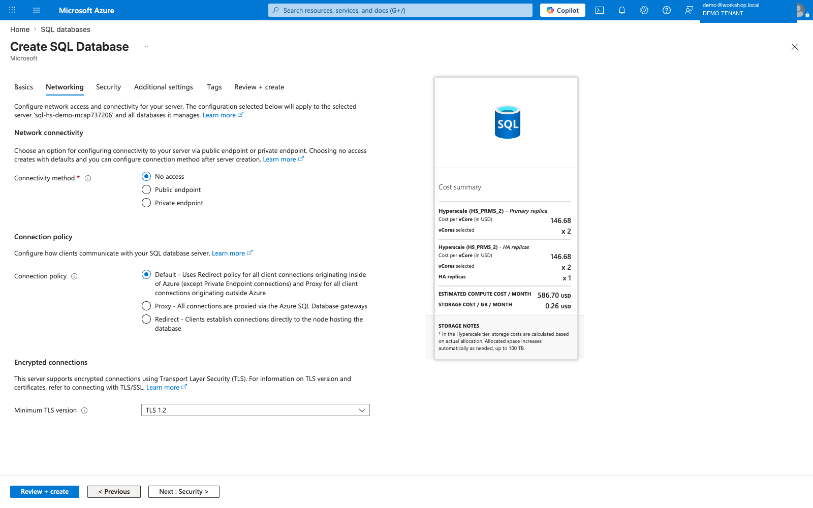
Allow Azure services + your client IP
Two firewall toggles to set Yes
Under Firewall rules:
- Set Allow Azure services and resources to access this server to Yes (required for Query Editor preview and many built-in Azure integrations).
- Set Add current client IP address to Yes so you can connect from SSMS or VS Code on your laptop.
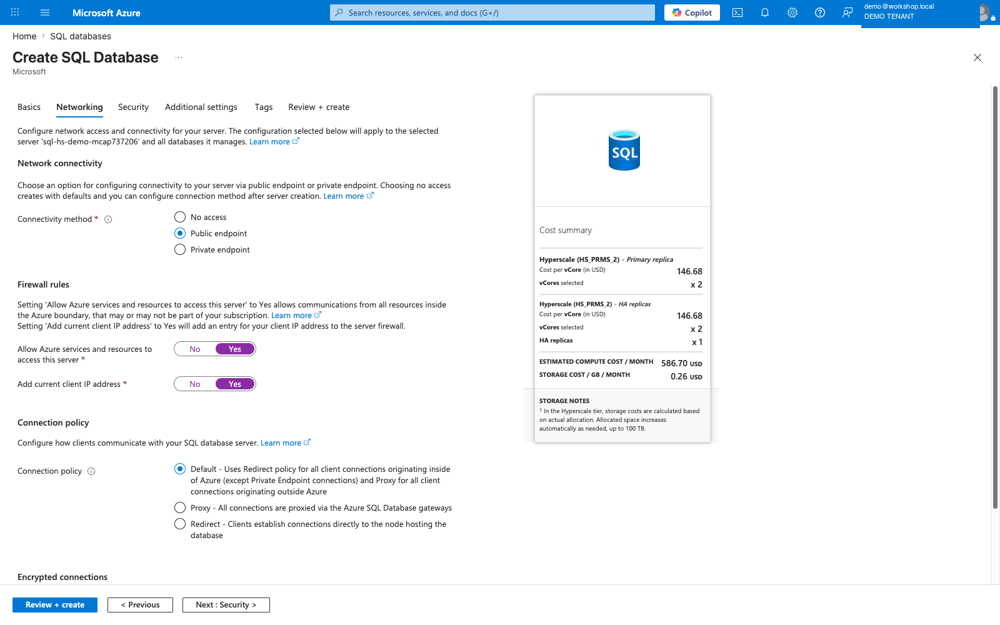
Security tab — Defender for SQL
Enable for prod · Skip for short-lived demos
The Security tab gates Defender for SQL (a 30-day free trial then ~$15/server/month). For production, enable it. For the demo we picked Not now to avoid the trial enrollment.
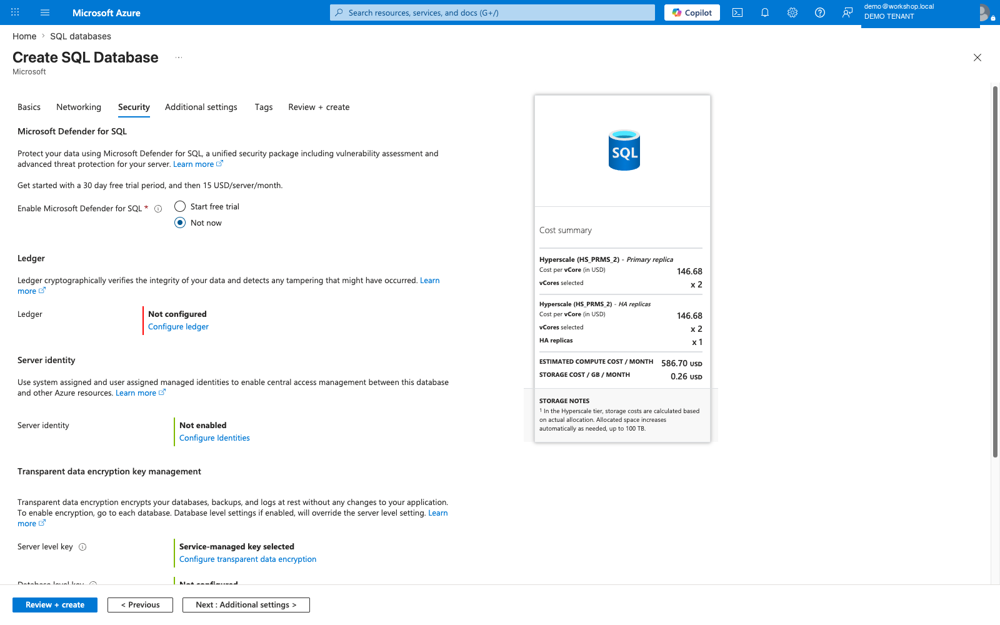
Additional settings — defaults are fine
Blank data source, default collation, default maintenance window
Leave the defaults: blank data source, SQL_Latin1_General_CP1_CI_AS collation, system-managed maintenance window.
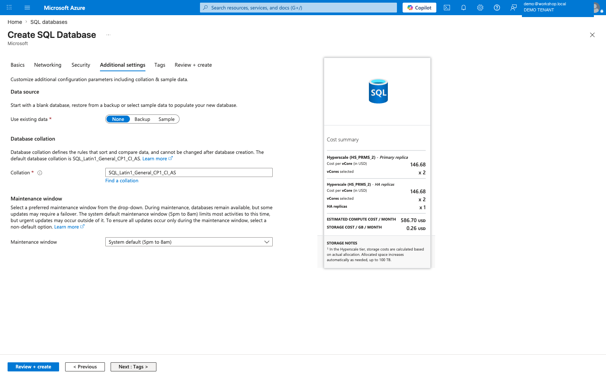
Review + Create
Last sanity check before the 20-minute deploy
Skip Tags. Click Review + create. Verify SKU shows Hyperscale Premium-series, 2 vCores, HA = 1, your firewall rules, and Entra-only auth on the server. Click Create.
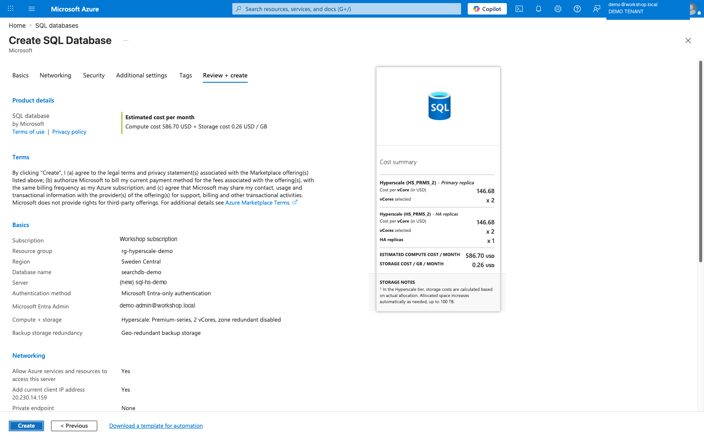
Deployment in progress (~15–25 min)
Server → Database → HA replica → Connection policy
The portal shows the standard ARM deployment progress panel — the server is created first, then firewall rules and connection policy, then the database (which is the slow step).
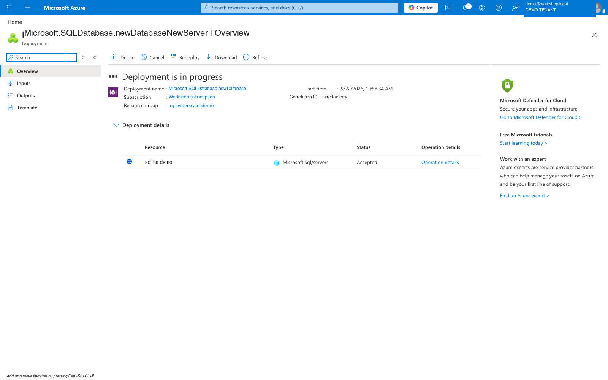
# Side-channel check — confirms DB is Online even if portal still says "in progress" az sql db show -g rg-hyperscale-prod -s <server-name> -n <db-name> --query status -o tsv
If the portal banner is stuck, click the Refresh button at the top of the deployment panel — it forces a re-query of ARM and the banner flips to "complete".
Deployment complete
Go to resource → DB Overview blade
You'll see the green "Your deployment is complete" banner with a Go to resource button in the Next steps panel.
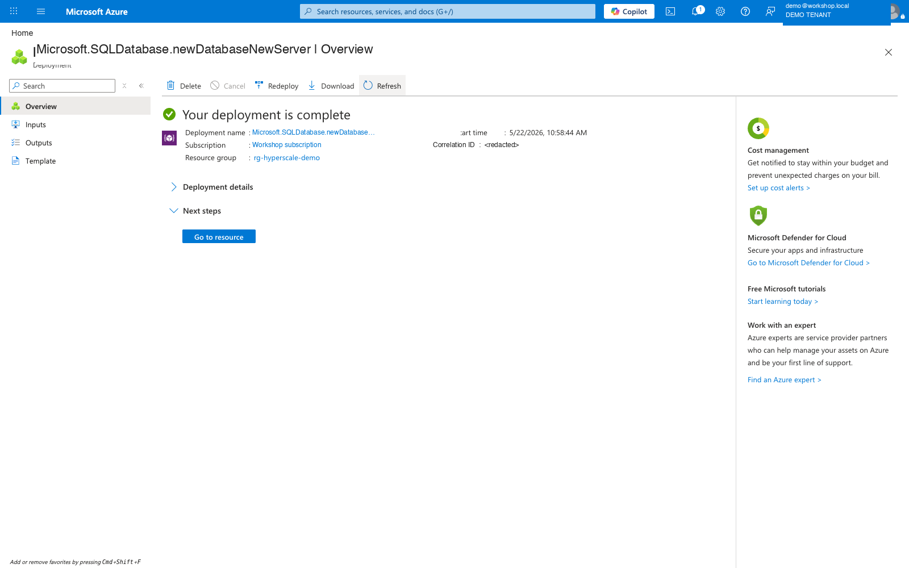
DB Overview blade — verify settings
Pricing tier should read Hyperscale: PRMS, 2 vCores
On the Overview blade, check that the Essentials panel shows Pricing tier = Hyperscale: PRMS, 2 vCores, the server FQDN, and Status = Online. The Earliest restore point appears within ~10 minutes of deploy completing.
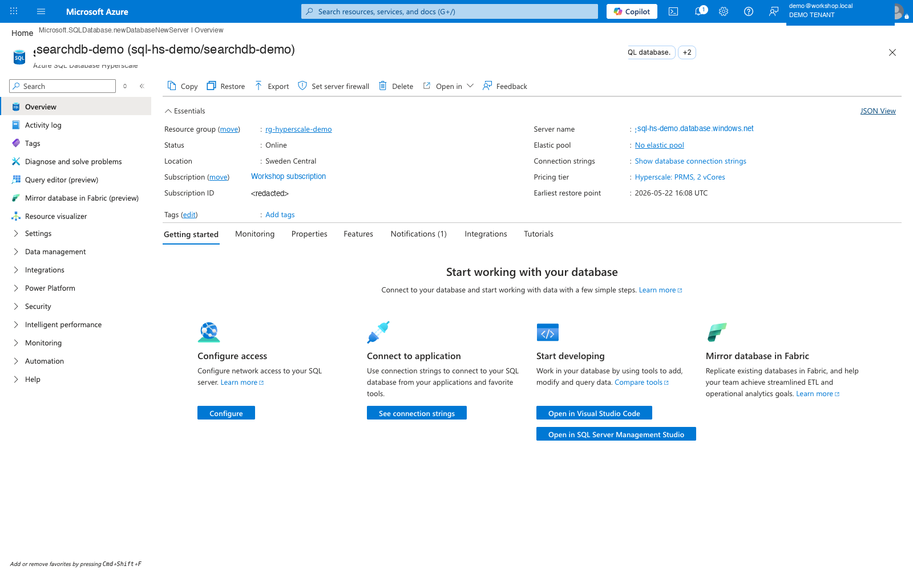
Open the Replicas blade
Left nav → Data management → Replicas
This blade lists both geo replicas (different region, DR) and named replicas (same region, read scale-out). It's empty right after deploy.
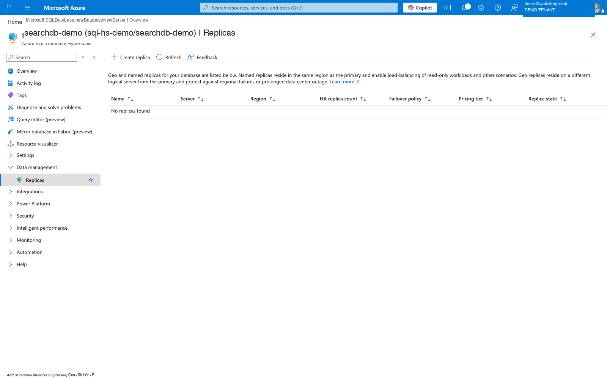
Create a named replica for read scale-out
+ Create replica → Named replica
Click + Create replica. In the dialog:
- Set Replica type to Named replica.
- Give the replica its own database name — e.g.
searchdb-ro(the wizard's default is<primary>_NamedReplicabut a clean-rosuffix is more readable in connection strings). - Keep the same server.
- Compute + storage inherits Hyperscale, Premium-series, 2 vCores from the primary — that's what you want.
- Click Review + create → Create.
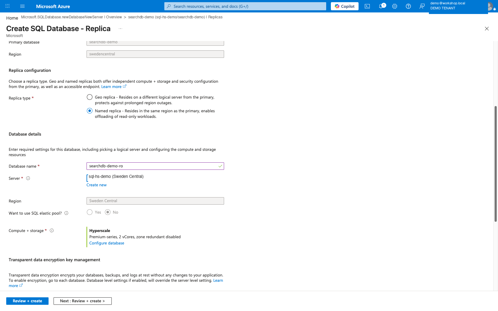
searchdb-demo-ro.<replica-name>.<server>.database.windows.net — point your read-heavy and analytics traffic at it to keep the primary's CPU free for writes.
Add as many named replicas as your read concurrency needs (Hyperscale supports many; each is billed at the same per-vCore rate as the primary).
Open the in-portal Query Editor
Left nav → Query editor (preview) → Connect with Entra
For one-off DBA queries you don't have to install SSMS or Azure Data Studio. Click Query editor (preview) in the left nav, leave Microsoft Entra authentication selected, and click Connect as <your-identity>.
Once connected, click New query and paste the T-SQL you want to run.
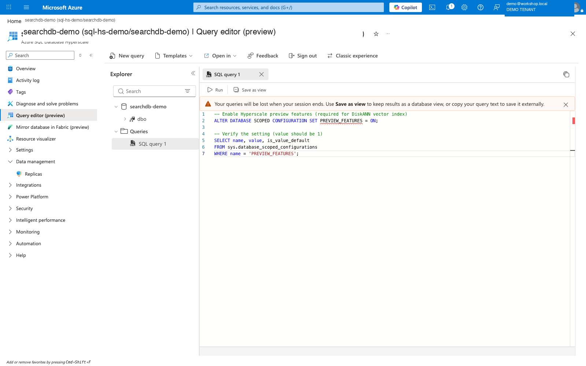
Flip the PREVIEW_FEATURES switch (DiskANN unlock)
Database-scoped configuration · runs once per database
Hyperscale exposes DiskANN behind a database-scoped preview flag. Run these two statements in Query Editor and click Run:
-- Enable Hyperscale preview features (required for DiskANN vector index) ALTER DATABASE SCOPED CONFIGURATION SET PREVIEW_FEATURES = ON; -- Verify the setting (value should be True) SELECT name, value, is_value_default FROM sys.database_scoped_configurations WHERE name = 'PREVIEW_FEATURES';
The second query should return exactly one row with value = True and is_value_default = False:
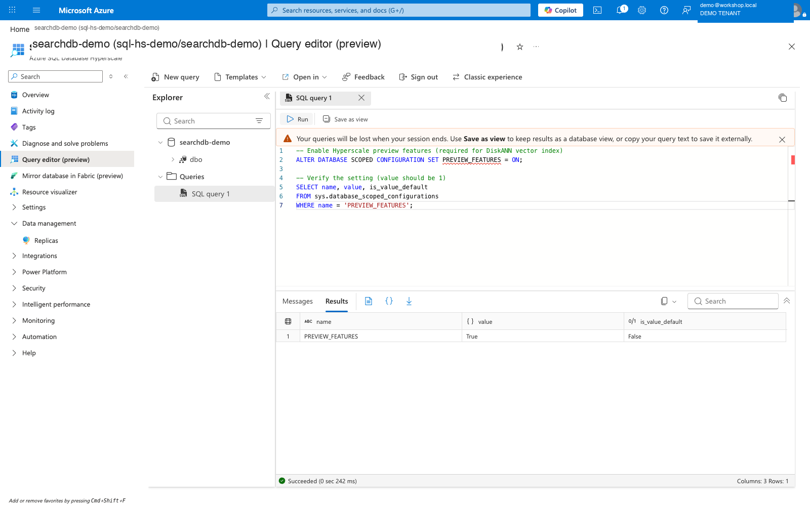
VECTOR_DISTANCE(), and serve semantic search workloads that previously required a separate Azure AI Search index.
Next: build a vector column + DiskANN index
With the database ready, the typical follow-on is a vector column, the DiskANN index, and an embedding-based search query:
-- 1. Add a vector column (dimension matches your embedding model, e.g. 1536 for text-embedding-3-small) ALTER TABLE dbo.Documents ADD embedding VECTOR(1536) NULL; -- 2. Populate it (call an embedding model from your ETL or via REST in T-SQL) UPDATE dbo.Documents SET embedding = AI_GENERATE_EMBEDDINGS(content) -- or insert pre-computed vectors WHERE embedding IS NULL; -- 3. Build the DiskANN index (one-time, runs in the background) CREATE VECTOR INDEX ix_documents_embedding ON dbo.Documents(embedding) WITH (metric = 'cosine', type = 'diskann'); -- 4. Run a similarity query SELECT TOP 10 d.id, d.title, VECTOR_DISTANCE('cosine', d.embedding, @query_vector) AS distance FROM dbo.Documents d ORDER BY distance;
Point read traffic at the named replica created in step 19 to keep vector queries from competing with OLTP writes.
Cleanup (demo only)
A Hyperscale Premium-series 2-vCore database burns ~$0.80/hour (compute + storage + HA replica), and a named replica doubles that. If you provisioned this for a demo only, delete the whole resource group when finished:
# Quickest way — deletes server, DB, HA replica, named replica, firewall rules in one shot az group delete -g rg-hyperscale-demo --yes --no-wait # Verify it eventually returns NotFound az group show -g rg-hyperscale-demo
All 21 screenshots in this guide were captured against a real Hyperscale deployment in a clean Microsoft demo tenant and deleted immediately after. No customer data, account names, or environment-specific identifiers appear in any screenshot.